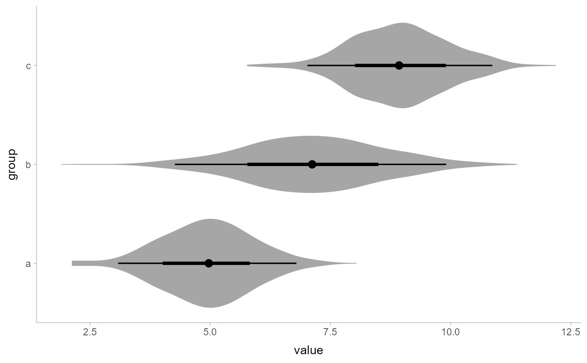
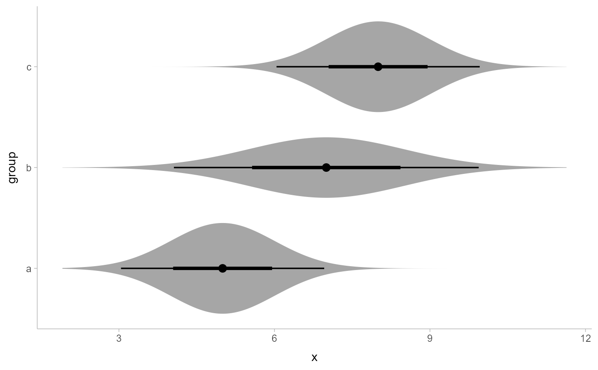

Shortcut version of stat_slabinterval() with geom_slabinterval() for
creating eye (violin + interval) plots.
Roughly equivalent to:
stat_slabinterval(
aes(side = stat("both"))
)stat_eye(
mapping = NULL,
data = NULL,
geom = "slabinterval",
position = "identity",
...,
slab_type = "pdf",
p_limits = c(NA, NA),
adjust = 1,
trim = TRUE,
expand = FALSE,
breaks = "Sturges",
outline_bars = FALSE,
point_interval = "median_qi",
limits = NULL,
n = 501,
.width = c(0.66, 0.95),
orientation = NA,
na.rm = FALSE,
show.legend = c(size = FALSE),
inherit.aes = TRUE
)Set of aesthetic mappings created by aes() or
aes_(). If specified and inherit.aes = TRUE (the
default), it is combined with the default mapping at the top level of the
plot. You must supply mapping if there is no plot mapping.
The data to be displayed in this layer. There are three options:
If NULL, the default, the data is inherited from the plot
data as specified in the call to ggplot().
A data.frame, or other object, will override the plot
data. All objects will be fortified to produce a data frame. See
fortify() for which variables will be created.
A function will be called with a single argument,
the plot data. The return value must be a data.frame, and
will be used as the layer data. A function can be created
from a formula (e.g. ~ head(.x, 10)).
Use to override the default connection between
stat_eye() and geom_slabinterval()
Position adjustment, either as a string, or the result of a call to a position adjustment function.
Setting this equal to "dodge" (position_dodge()) or "dodgejust" (position_dodgejust()) can be useful if
you have overlapping geometries.
Other arguments passed to layer(). These are often aesthetics, used to set an aesthetic
to a fixed value, like colour = "red" or size = 3 (see Aesthetics, below). They may also be
parameters to the paired geom/stat. When paired with the default geom, geom_slabinterval(),
these include:
normalizeHow to normalize heights of functions input to the thickness aesthetic. One of:
"all": normalize so that the maximum height across all data is 1.
"panels": normalize within panels so that the maximum height in each panel is 1.
"xy": normalize within the x/y axis opposite the orientation of this geom so
that the maximum height at each value of the opposite axis is 1.
"groups": normalize within values of the opposite axis and within each
group so that the maximum height in each group is 1.
"none": values are taken as is with no normalization (this should probably
only be used with functions whose values are in [0,1], such as CDFs).
fill_typeWhat type of fill to use when the fill color or alpha varies within a slab. One of:
"segments": breaks up the slab geometry into segments for each unique combination of fill color and
alpha value. This approach is supported by all graphics devices and works well for sharp cutoff values,
but can give ugly results if a large number of unique fill colors are being used (as in gradients,
like in stat_gradientinterval()).
"gradient": a grid::linearGradient() is used to create a smooth gradient fill. This works well for
large numbers of unique fill colors, but requires R >= 4.1 and is not yet supported on all graphics devices.
As of this writing, the png() graphics device with type = "cairo", the svg() device, the pdf()
device, and the ragg::agg_png() devices are known to support this option. On R < 4.1, this option
will fall back to fill_type = "segment" with a message.
"auto": attempts to use fill_type = "gradient" if support for it can be auto-detected. On R >= 4.2,
support for gradients can be auto-detected on some graphics devices; if support is not detected, this
option will fall back to fill_type = "segments" (in case of a false negative, fill_type = "gradient"
can be set explicitly). On R < 4.2, support for gradients cannot be auto-detected, so this will always
fall back to fill_type = "segments", in which case you can set fill_type = "gradient" explicitly
if you are using a graphics device that support gradients.
interval_size_domainA length-2 numeric vector giving the minimum and maximum of the values of the size aesthetic that will be
translated into actual sizes for intervals drawn according to interval_size_range (see the documentation
for that argument.)
interval_size_rangeA length-2 numeric vector. This geom scales the raw size aesthetic values when drawing interval and point
sizes, as they tend to be too thick when using the default settings of scale_size_continuous(), which give
sizes with a range of c(1, 6). The interval_size_domain value indicates the input domain of raw size
values (typically this should be equal to the value of the range argument of the scale_size_continuous()
function), and interval_size_range indicates the desired output range of the size values (the min and max of
the actual sizes used to draw intervals). Most of the time it is not recommended to change the value of this
argument, as it may result in strange scaling of legends; this argument is a holdover from earlier versions
that did not have size aesthetics targeting the point and interval separately. If you want to adjust the
size of the interval or points separately, you can instead use the interval_size or point_size
aesthetics; see scales.
fatten_pointA multiplicative factor used to adjust the size of the point relative to the size of the
thickest interval line. If you wish to specify point sizes directly, you can also use the point_size
aesthetic and scale_point_size_continuous() or scale_point_size_discrete(); sizes
specified with that aesthetic will not be adjusted using fatten_point.
The type of slab function to calculate: probability density (or mass) function ("pdf"),
cumulative distribution function ("cdf"), or complementary CDF ("ccdf").
Probability limits (as a vector of size 2) used to determine the lower and upper
limits of the slab. E.g., if this is c(.001, .999), then a slab is drawn
for the distribution from the quantile at p = .001 to the quantile at p = .999. If the lower
(respectively upper) limit is NA, then the lower (upper) limit will be the minimum (maximum) of the
distribution's support if it is finite, and 0.001 (0.999) if it is not finite. E.g., if
p_limits is c(NA, NA) on a gamma distribution the effective value of p_limits would be
c(0, .999) since the gamma distribution is defined on (0, Inf); whereas on a normal distribution
it would be equivalent to c(.001, .999) since the normal distribution is defined on (-Inf, Inf).
If slab_type is "pdf", bandwidth for the density estimator for sample data
is adjusted by multiplying it by this value. See density() for more information.
For sample data, should the density estimate be trimmed to the range of the
input data? Default TRUE.
For sample data, should the slab be expanded to the limits of the scale? Default FALSE.
If slab_type is "histogram", the breaks parameter that is passed to
hist() to determine where to put breaks in the histogram (for sample data).
For sample data (if slab_type is "histogram") and for discrete analytical
distributions (whose slabs are drawn as histograms), determines
if outlines in between the bars are drawn when the slab_color aesthetic is used. If FALSE
(the default), the outline is drawn only along the tops of the bars; if TRUE, outlines in between
bars are also drawn.
A function from the point_interval() family (e.g., median_qi,
mean_qi, mode_hdi, etc), or a string giving the name of a function from that family
(e.g., "median_qi", "mean_qi", "mode_hdi", etc; if a string, the caller's environment is searched
for the function, followed by the ggdist environment). This function determines the point summary
(typically mean, median, or mode) and interval type (quantile interval, qi;
highest-density interval, hdi; or highest-density continuous interval, hdci). Output will
be converted to the appropriate x- or y-based aesthetics depending on the value of orientation.
See the point_interval() family of functions for more information.
Manually-specified limits for the slab, as a vector of length two. These limits are combined with those
computed based on p_limits as well as the limits defined by the scales of the plot to determine the
limits used to draw the slab functions: these limits specify the maximal limits; i.e., if specified, the limits
will not be wider than these (but may be narrower). Use NA to leave a limit alone; e.g.
limits = c(0, NA) will ensure that the lower limit does not go below 0, but let the upper limit
be determined by either p_limits or the scale settings.
Number of points at which to evaluate the function that defines the slab.
The .width argument passed to point_interval: a vector of probabilities to use
that determine the widths of the resulting intervals. If multiple probabilities are provided,
multiple intervals per group are generated, each with a different probability interval (and
value of the corresponding .width and level generated variables).
Whether this geom is drawn horizontally or vertically. One of:
NA (default): automatically detect the orientation based on how the aesthetics
are assigned. Automatic detection works most of the time.
"horizontal" (or "y"): draw horizontally, using the y aesthetic to identify different
groups. For each group, uses the x, xmin, xmax, and thickness aesthetics to
draw points, intervals, and slabs.
"vertical" (or "x"): draw vertically, using the x aesthetic to identify different
groups. For each group, uses the y, ymin, ymax, and thickness aesthetics to
draw points, intervals, and slabs.
For compatibility with the base ggplot naming scheme for orientation, "x" can be used as an alias
for "vertical" and "y" as an alias for "horizontal" (tidybayes had an orientation parameter
before base ggplot did, hence the discrepancy).
If FALSE, the default, missing values are removed with a warning. If TRUE, missing
values are silently removed.
Should this layer be included in the legends? Default is c(size = FALSE), unlike most geoms,
to match its common use cases. FALSE hides all legends, TRUE shows all legends, and NA shows only
those that are mapped (the default for most geoms).
If FALSE, overrides the default aesthetics,
rather than combining with them. This is most useful for helper functions
that define both data and aesthetics and shouldn't inherit behaviour from
the default plot specification, e.g. borders().
A ggplot2::Stat representing a eye (violin + interval) geometry which can
be added to a ggplot() object.
To visualize sample data, such as a data distribution, samples from a
bootstrap distribution, or a Bayesian posterior, you can supply samples to
the x or y aesthetic.
To visualize analytical distributions, you can use the xdist or ydist
aesthetic. For historical reasons, you can also use dist to specify the distribution, though
this is not recommended as it does not work as well with orientation detection.
These aesthetics can be used as follows:
xdist, ydist, and dist can be any distribution object from the distributional
package (dist_normal(), dist_beta(), etc) or can be a posterior::rvar() object.
Since these functions are vectorized,
other columns can be passed directly to them in an aes() specification; e.g.
aes(dist = dist_normal(mu, sigma)) will work if mu and sigma are columns in the
input data frame.
dist can be a character vector giving the distribution name. Then the arg1, ... arg9
aesthetics (or args as a list column) specify distribution arguments. Distribution names
should correspond to R functions that have "p", "q", and "d" functions; e.g. "norm"
is a valid distribution name because R defines the pnorm(), qnorm(), and dnorm()
functions for Normal distributions.
See the parse_dist() function for a useful way to generate dist and args
values from human-readable distribution specs (like "normal(0,1)"). Such specs are also
produced by other packages (like the brms::get_prior function in brms); thus,
parse_dist() combined with the stats described here can help you visualize the output
of those functions.
The following variables are computed by this stat and made available for
use in aesthetic specifications (aes()) using the stat() or after_stat()
functions:
x or y: For slabs, the input values to the slab function.
For intervals, the point summary from the interval function. Whether it is x or y depends on orientation
xmin or ymin: For intervals, the lower end of the interval from the interval function.
xmax or ymax: For intervals, the upper end of the interval from the interval function.
.width: For intervals, the interval width as a numeric value in [0, 1].
level: For intervals, the interval width as an ordered factor.
f: For slabs, the output values from the slab function (such as the PDF, CDF, or CCDF),
determined by slab_type.
pdf: For slabs, the probability density function.
cdf: For slabs, the cumulative distribution function.
n: For slabs, the number of data points summarized into that slab. If the slab was created from
an analytical distribution via the xdist, ydist, or dist aesthetic, n will be Inf.
The slab+interval stats and geoms have a wide variety of aesthetics that control
the appearance of their three sub-geometries: the slab, the point, and
the interval.
These stats support the following aesthetics:
x: x position of the geometry (when orientation = "vertical"); or sample data to be summarized
(when orientation = "horizontal" with sample data).
y: y position of the geometry (when orientation = "horizontal"); or sample data to be summarized
(when orientation = "vertical" with sample data).
xdist: When using analytical distributions, distribution to map on the x axis: a distributional
object (e.g. dist_normal()) or a posterior::rvar() object.
ydist: When using analytical distributions, distribution to map on the y axis: a distributional
object (e.g. dist_normal()) or a posterior::rvar() object.
dist: When using analytical distributions, a name of a distribution (e.g. "norm"), a
distributional object (e.g. dist_normal()), or a posterior::rvar() object. See Details.
args: Distribution arguments (args or arg1, ... arg9). See Details.
In addition, in their default configuration (paired with geom_slabinterval())
the following aesthetics are supported by the underlying geom:
Slab-specific aesthetics
thickness: The thickness of the slab at each x value (if orientation = "horizontal") or
y value (if orientation = "vertical") of the slab.
side: Which side to place the slab on. "topright", "top", and "right" are synonyms
which cause the slab to be drawn on the top or the right depending on if orientation is "horizontal"
or "vertical". "bottomleft", "bottom", and "left" are synonyms which cause the slab
to be drawn on the bottom or the left depending on if orientation is "horizontal" or
"vertical". "topleft" causes the slab to be drawn on the top or the left, and "bottomright"
causes the slab to be drawn on the bottom or the right. "both" draws the slab mirrored on both
sides (as in a violin plot).
scale: What proportion of the region allocated to this geom to use to draw the slab. If scale = 1,
slabs that use the maximum range will just touch each other. Default is 0.9 to leave some space.
justification: Justification of the interval relative to the slab, where 0 indicates bottom/left
justification and 1 indicates top/right justification (depending on orientation). If justification
is NULL (the default), then it is set automatically based on the value of side: when side is
"top"/"right" justification is set to 0, when side is "bottom"/"left"
justification is set to 1, and when side is "both" justification is set to 0.5.
datatype: When using composite geoms directly without a stat (e.g. geom_slabinterval()), datatype is used to
indicate which part of the geom a row in the data targets: rows with datatype = "slab" target the
slab portion of the geometry and rows with datatype = "interval" target the interval portion of
the geometry. This is set automatically when using ggdist stats.
Interval-specific aesthetics
xmin: Left end of the interval sub-geometry (if orientation = "horizontal").
xmax: Right end of the interval sub-geometry (if orientation = "horizontal").
ymin: Lower end of the interval sub-geometry (if orientation = "vertical").
ymax: Upper end of the interval sub-geometry (if orientation = "vertical").
Point-specific aesthetics
shape: Shape type used to draw the point sub-geometry.
Color aesthetics
colour: (or color) The color of the interval and point sub-geometries.
Use the slab_color, interval_color, or point_color aesthetics (below) to
set sub-geometry colors separately.
fill: The fill color of the slab and point sub-geometries. Use the slab_fill
or point_fill aesthetics (below) to set sub-geometry colors separately.
alpha: The opacity of the slab, interval, and point sub-geometries. Use the slab_alpha,
interval_alpha, or point_alpha aesthetics (below) to set sub-geometry colors separately.
colour_ramp: (or color_ramp) A secondary scale that modifies the color
scale to "ramp" to another color. See scale_colour_ramp() for examples.
fill_ramp: A secondary scale that modifies the fill
scale to "ramp" to another color. See scale_fill_ramp() for examples.
Line aesthetics
size: Width of the outline around the slab (if visible). Also determines the width of
the line used to draw the interval and the size of the point, but raw
size values are transformed according to the interval_size_domain, interval_size_range,
and fatten_point parameters of the geom (see above). Use the slab_size,
interval_size, or point_size aesthetics (below) to set sub-geometry line widths separately
(note that when size is set directly using the override aesthetics, interval and point
sizes are not affected by interval_size_domain, interval_size_range, and fatten_point).
stroke: Width of the outline around the point sub-geometry.
linetype: Type of line (e.g., "solid", "dashed", etc) used to draw the interval
and the outline of the slab (if it is visible). Use the slab_linetype or
interval_linetype aesthetics (below) to set sub-geometry line types separately.
Slab-specific color/line override aesthetics
slab_fill: Override for fill: the fill color of the slab.
slab_colour: (or slab_color) Override for colour/color: the outline color of the slab.
slab_alpha: Override for alpha: the opacity of the slab.
slab_size: Override for size: the width of the outline of the slab.
slab_linetype: Override for linetype: the line type of the outline of the slab.
Interval-specific color/line override aesthetics
interval_colour: (or interval_color) Override for colour/color: the color of the interval.
interval_alpha: Override for alpha: the opacity of the interval.
interval_size: Override for size: the line width of the interval.
interval_linetype: Override for linetype: the line type of the interval.
Point-specific color/line override aesthetics
point_fill: Override for fill: the fill color of the point.
point_colour: (or point_color) Override for colour/color: the outline color of the point.
point_alpha: Override for alpha: the opacity of the point.
point_size: Override for size: the size of the point.
Other aesthetics (these work as in standard geoms)
width
height
group
See examples of some of these aesthetics in action in vignette("slabinterval").
Learn more about the sub-geom override aesthetics (like interval_color) in the
scales documentation. Learn more about basic ggplot aesthetics in
vignette("ggplot2-specs").
See geom_slabinterval() for the geom underlying this stat.
See stat_slabinterval() for the stat this shortcut is based on.
Other slabinterval stats:
stat_ccdfinterval(),
stat_cdfinterval(),
stat_gradientinterval(),
stat_halfeye(),
stat_histinterval(),
stat_interval(),
stat_pointinterval(),
stat_slab()
library(dplyr)
library(ggplot2)
library(distributional)
theme_set(theme_ggdist())
# ON SAMPLE DATA
set.seed(1234)
df = data.frame(
group = c("a", "b", "c"),
value = rnorm(1500, mean = c(5, 7, 9), sd = c(1, 1.5, 1))
)
df %>%
ggplot(aes(x = value, y = group)) +
stat_eye()

# ON ANALYTICAL DISTRIBUTIONS
dist_df = data.frame(
group = c("a", "b", "c"),
mean = c( 5, 7, 8),
sd = c( 1, 1.5, 1)
)
# Vectorized distribution types, like distributional::dist_normal()
# and posterior::rvar(), can be used with the `xdist` / `ydist` aesthetics
dist_df %>%
ggplot(aes(y = group, xdist = dist_normal(mean, sd))) +
stat_eye()
